Small screen.
Big playground.
Games. Notes. Books. Tools.
Little things, thoughtfully tucked away.
No feeds.
No notifications.
No endless scrolling.
Just you and your Toybox.
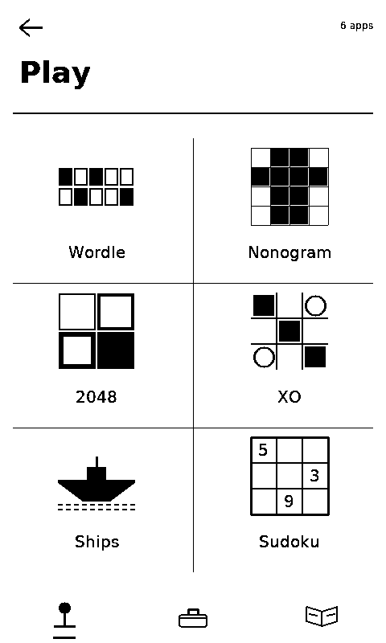
Explore
A little bit of everything.
Everything you need, nothing you don't.
- Games
- Take a break.
- Notes
- Get it out of your head.
- Books
- Pick up where you left off.
- Recipes
- Keep your hands free.
- Flashcards
- Learn a little at a time.
- Tools
- Handy things, always nearby.
Inside
Pick something.
Every screen here is drawn by the device itself. Show me six others.
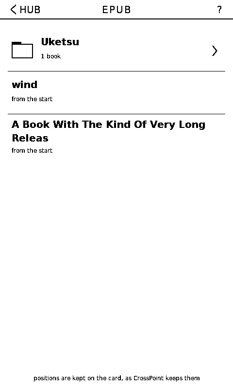
Read anywhere.
Bring your EPUBs and comics. Pick a book, pick a page, keep reading — and your place is kept on the card, not in an account.
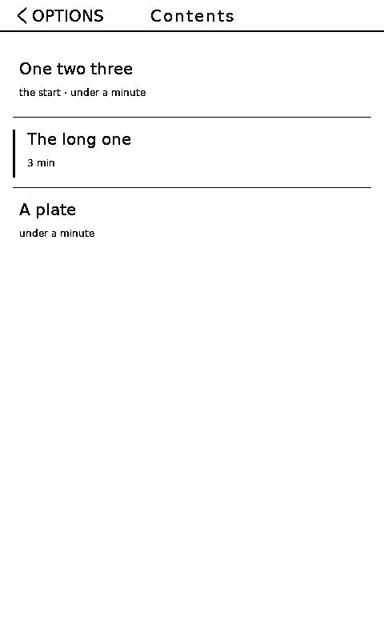
The book’s own contents.
Chapters as the publisher named them, each with how long it runs. Time for another, or time for bed.
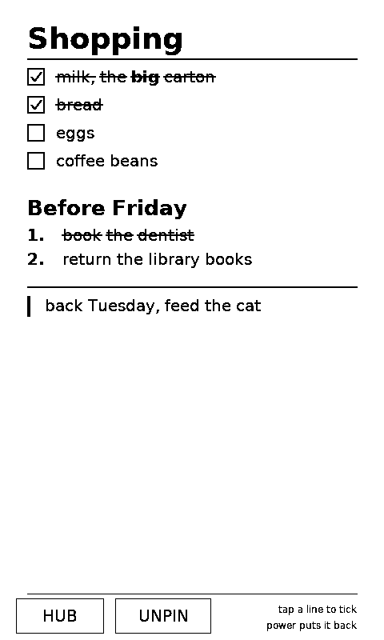
Get it out of your head.
Write something down. Pin it. Come back when you need it. Nothing gets lost in a feed.
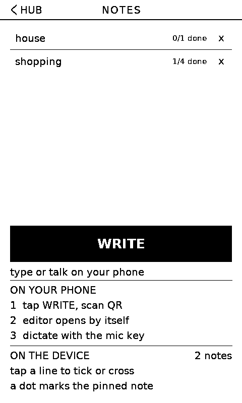
Type on your phone.
Your phone is the keyboard, Toybox is the display. Scan the code, type or dictate, and it lands on the glass.
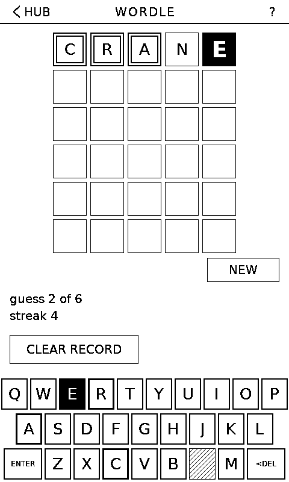
Guess the word.
Six tries. One word. Can you crack it? A new one whenever you want one.
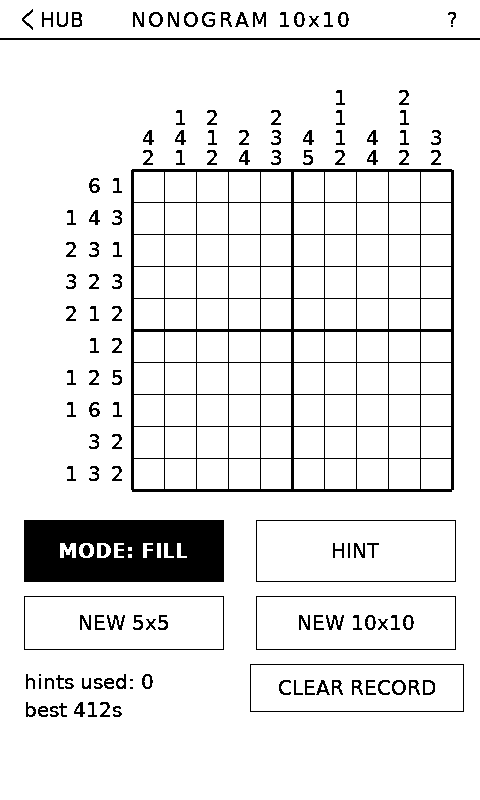
Pixel by pixel.
Follow the numbers, reveal the picture. Take your time.
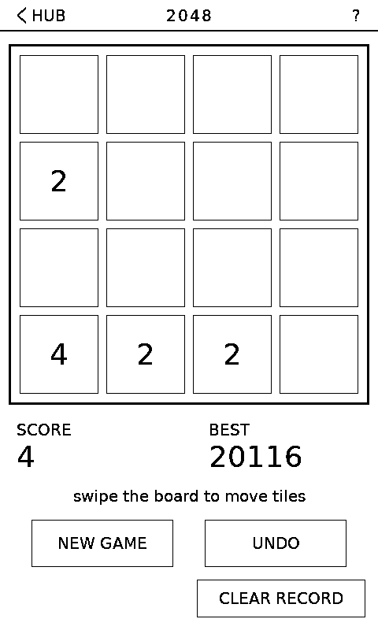
Keep merging.
Combine matching tiles, chase the 2048. One more move.
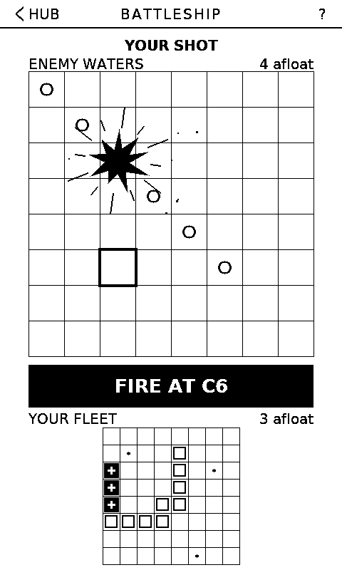
Find their fleet.
Place your ships, take your shots, sink them all. Fire when ready.
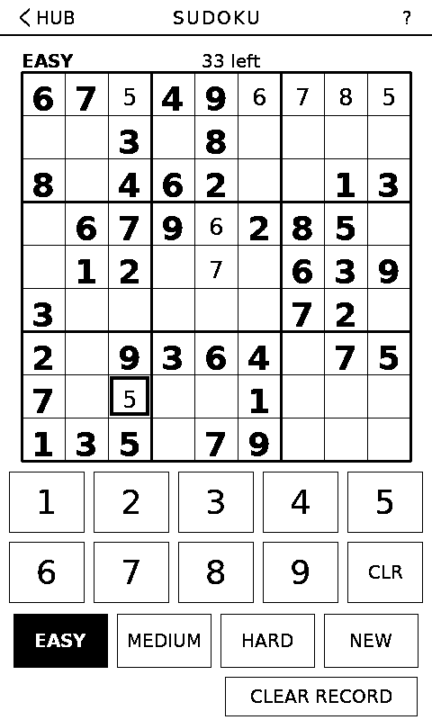
Clear your head.
Fill the grid. Find the pattern. Don’t repeat a number. Easy to learn, hard to put down.
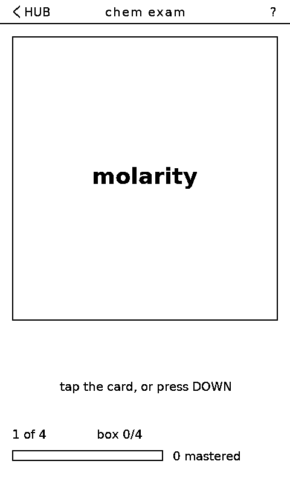
Learn one card at a time.
Make decks, review cards, watch them stick. A few minutes goes a long way.
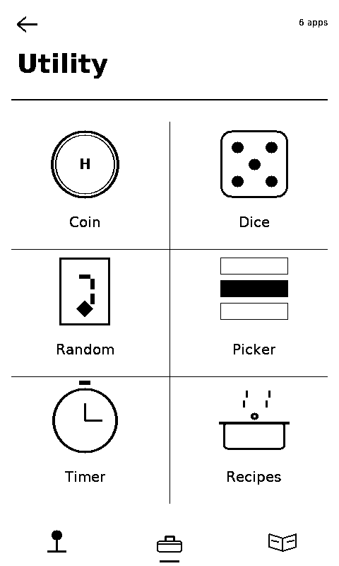
Small tools. Handy moments.
Coin flip. Dice. Cards. Random numbers. Timer. Stopwatch. And a list you can’t decide from — give it the options, let it pick. No searching required.
E-paper
Made for things that stay.
Toybox keeps your last screen visible while the device sleeps. Useful information doesn’t need to disappear just because the battery does.
See it. Leave it. Come back later.
Put it where you can see it. Pin a note, a list, a reminder, a recipe — anything you want close by. Tick a line as you go and the tick is still there when you come back.
Make it yours. Custom wallpapers, custom lock screens, your own books and decks and recipes. Any app you never use can be hidden.
In your language. English · ไทย · 中文 · 日本語 · 한국어 · Tiếng Việt
Filling it
Bring your own.
EPUBs go straight on the card and open as they are. Comics are the harder case — a webtoon is one strip a mile long, a manga page is wider than the panel — so there is a desktop tool for those.
Toybox
Slicer takes .cbz chapters, loose images or an
EPUB and writes pages at the panel’s own 480×800. For a
webtoon it stitches the slices back into one strip and re-cuts it,
snapping every cut to a blank gutter — so a page never lands
through a face or a speech bubble.
It does sleep art and wallpapers in batches too. For one picture, the wallpaper maker here is quicker.
Notes and flashcard decks travel on the card as well. The
note and flashcard editor writes both on a
keyboard and downloads the file; drop it in /notes or
/decks and press CARD on the device.
Install
Get Toybox running.
No complicated setup. No app on your computer.
- Connect your Sticky. Use a USB-C cable that carries data — a charging cable will not do, and that is the commonest reason nothing appears. Nothing showing up?
- Add a language pack if you need one. The common characters
are already in the firmware; these add the rest.
- Let it install. Reading which build is here…
When the browser asks about erasing the device, leave the box unchecked. Unchecked, an install writes the firmware and nothing else — notes, settings, saved pages, decks and font packs all survive. Ticked, they do not.
UPDATE is the one to use for every build after your first. FIRST INSTALL adds the bootloader and partition table — needed once on a new device, or to rescue one that will not boot.
What changed
- beta.59
- The flashcard import screen shows the link as soon as your phone joins, instead of waiting to be asked.
- beta.58
- Flashcard bars show how far a deck has come rather than how many cards are finished, so they move after every session. The device plays a short phrase when it comes up on new firmware — a longer one the very first time.
- beta.57
- Notes and flashcard decks can be read
straight off the SD card:
.mdor.txtin/notes,.tsv,.csvor.txtin/decks. The editor on this site writes both. - beta.56
- Recipes gained text size, line spacing and screen rotation, using the same controls the readers do. Vulgar fractions draw properly instead of as boxes.
- beta.55
- The smallest interface text went from 16 to 18 px.
Every build keeps your notes, decks, settings, saved games and reading positions when it is installed with UPDATE. The full history is the commit log.
Getting started
Your first five minutes.
Step two is the one worth doing before anything else — it takes a minute and it saves the awkward ones.
- Let it settle. The first boot takes a few extra seconds while it sets up storage.
- Hold either side button while it powers on. That reaches the service screen, which says what the board answered on each bus and can straighten the screen or the touch if your unit disagrees with mine. There is a tickable checklist for a phone held next to the device.
- Pick a game. Start with something familiar.
- Pin a note. Open Notes → Write, scan the code with your phone, and type. Then pin it and pull the power.
- Make it yours. Change the wallpaper and settle in.
The idea
Why this exists.
The Sticky has an e-paper panel that keeps its last picture when the power is gone. Most things built on that treat the screen as a dashboard — something to glance at. I wanted the opposite: a screen you put something on and then forget about, because it will still be there in a month.
So the notes are the point, the reader is what I use most, and the games are there because a screen that redraws in a fifth of a second suits a crossword far better than it suits a video.
Built by KS. Firmware, converter and this page are all open source — if it does something you didn’t ask for, the code is there to change.
If something goes wrong
Help.
No serial port showing up?
- Use a data-capable USB-C cable, not a charging cable.
- On Windows, install the CH343 driver. The Sticky uses a CH34x serial chip.
- Still nothing? Hold the power button while plugging in, then try Install again.
Prefer the command line?
Update, keeping everything:
esptool --chip esp32s3 write_flash 0x10000 toybox-app.bin
First install (also writes bootloader and partition table; note this one resets the device's settings):
esptool --chip esp32s3 write_flash 0x0 toybox-full.bin
Download toybox-app.bin or toybox-full.bin.
Will an update wipe my notes?
No. Every part is written at its own offset and the gaps between them are never touched: settings and saved reading pages live in NVS, notes and decks and pictures in the filesystem, and neither is in the firmware's way. The one thing that does wipe them is ticking the erase device box in the browser's dialog, which is why it is worth reading that dialog rather than clicking through it.
There’s always room for one more thing.
A game.
A book.
A recipe.
A thought.
Put it in the Toybox. We’ll keep it here.
Small screen. Big playground.
Install it